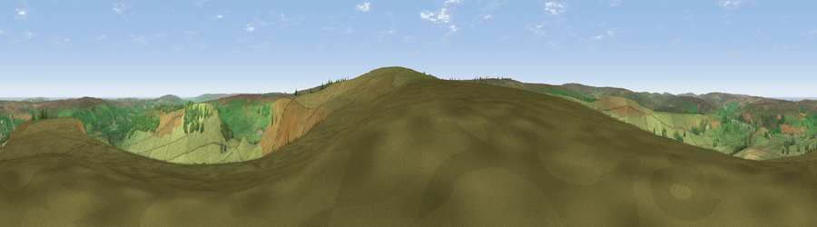

Viewpoint near Botton
#5553 in England · top 19% of its area beats it · near BottonWhere it is
The exact computed spot (NZ 70425 05225). Click the marker for map links.
The view, rendered

A 360° render of this exact spot computed from the terrain model, tree cover and land cover — summer colours, afternoon light, calibrated against photographs of famous viewpoints. Real trees, hedges and buildings will differ in detail.
The panorama
Grey silhouette: terrain skyline in each direction (720 bearings, Earth curvature and refraction included). Dashed green: skyline with trees (+15 m) and buildings (+8 m) as obstacles. Blue strip: how far the ground is visible on each bearing.
Where the view opens
Wedge length = distance to the farthest visible ground on that bearing (vegetation-aware). Rings at 10, 25 and 50 km.
What fills the view
93% grassland · 5% woodland · 1% cropland ·
Angular shares of the visible panorama (visual magnitude), not map area. Landscape diversity 0.14 (0–1 Shannon).
Key numbers
More beautiful places nearby
The staircase of upgrades: each row has a higher view potential than everything closer. Driving times are estimates from straight-line distance, calibrated against real road routing — check an actual route before setting out.
| Place | Direction | Drive | Score |
|---|---|---|---|
| Viewpoint near Botton | S · 1 km | ~3 min | 72.1 |
| Peat Hill | SSE · 4 km | ~10 min | 72.5 |
| Danby Beacon | NE · 5 km | ~11 min | 73.4 |
| Viewpoint near Ingleby Greenhow | W · 10 km | ~19 min | 75.6 |
| Viewpoint near Ingleby Greenhow | W · 10 km | ~20 min | 76.0 |
| Viewpoint near Roxby | NE · 12 km | ~22 min | 78.2 |
| Viewpoint near Charltons | NW · 12 km | ~22 min | 80.6 |
| Viewpoint near Hutton Village | NW · 12 km | ~23 min | 81.0 |
54.43757, -0.91572 · source: screening · position refined by local search. Computed location — check access rights before visiting.